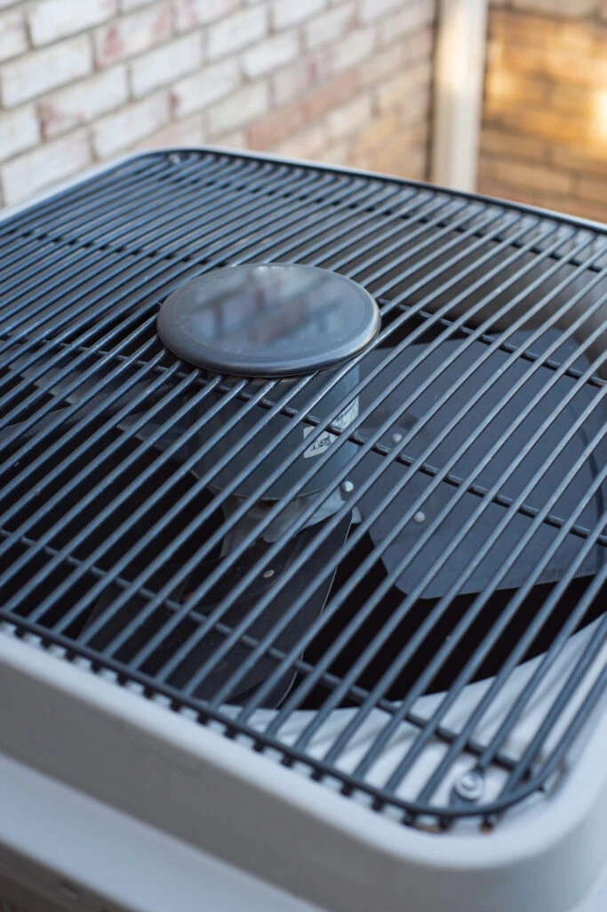

Is your air conditioner compressor not turning on? Use this practical diagnostic guide covering central air issues, capacitor checks, and fan motor inspection.
If your central air conditioner compressor is not turning on, you are facing one of the most common summer complaints in Spring Hill and the surrounding communities and counties. The outdoor unit may hum, click, or stay completely silent while warm air blows inside. In many cases, the cause traces back to electrical components like the capacitor or fan motor rather than a complete compressor failure.
Homeowners in Hernando, Pasco, and Citrus Counties often notice these problems during peak heat when systems run for long stretches. The steps below walk you through safe, logical checks you can perform yourself. If anything feels uncertain or the issue continues, our team stands ready with same-day diagnostics and repair.
If these initial checks do not resolve the problem or you prefer professional handling from the start, call our expert technicians at (352) 684-7821 for reliable AC compressor repair in Spring Hill and the broader area. We serve all of Hernando County, Pasco County, and Citrus County with licensed technicians and prompt response. Request same-day service here.

Compressors are the heart of your cooling system. They circulate refrigerant to remove heat from your home. When the compressor fails to start, the entire process stops. Several everyday issues can prevent startup, including electrical supply problems, failed starting components, or safety switches that have tripped due to high pressure or overheating.
Florida’s hot, humid conditions add extra stress. Systems work harder and longer, which can accelerate wear on capacitors and motors. Dirty filters and coils rank among the leading contributors to premature compressor or fan failure because they force the system to operate under greater strain.
Regular attention to basic maintenance helps reduce these risks, but when the compressor will not engage, targeted diagnostics usually reveal the culprit quickly.
Several factors appear frequently in our service area:
Many of these problems begin with simple maintenance oversights. The U.S. Department of Energy also points out that poor service procedures or incorrect refrigerant levels can ultimately damage the compressor and shorten equipment life.
Before touching any part of your air conditioning system, prioritize safety. Air conditioning equipment involves high voltage and components that can hold an electrical charge even after power is removed.
These precautions protect you and help prevent accidental damage to the system.
When in doubt about any electrical or mechanical check, reach out to our experienced team. We handle these situations daily across Spring Hill and the three-county area with proper safety protocols and equipment. Call (352) 684-7821 now or request service online.
Work through the checks in order. Many issues resolve at the early steps.
Set the thermostat to “Cool” and several degrees below current room temperature. Verify the indoor unit blower fan turns on. Check that the outdoor disconnect switch and breaker are in the “On” position. Reset any tripped breaker once and test again. If it trips immediately, leave it off and contact us.
With power restored briefly for observation only, stand near the outdoor unit and listen. A strong hum without the compressor engaging often points to a capacitor problem. A completely silent unit may indicate no power reaching the compressor or a control issue. Look for bulging, leaking, or burnt marks on the capacitor (usually a cylindrical or oval component near the compressor).
A failing capacitor is one of the most frequent reasons a compressor will not start. After confirming power is off and safely discharging if trained to do so:
Many systems use a dual capacitor that serves both the compressor and fan motor. Replacement is a common, relatively straightforward repair when performed by a technician.
The fan should spin freely by hand (power off) with minimal resistance. If it feels gritty, seized, or makes noise when powered on briefly, the motor or its capacitor may need attention. Restricted airflow from a non-spinning fan quickly leads to high head pressure and safety shutdowns.
Check contactor points for pitting or burning. Listen for clicking sounds that may indicate the contactor is trying to engage but failing. Note any error codes on newer systems with diagnostic lights or displays.
If the basic checks do not restore operation, or if refrigerant-related symptoms appear (ice on lines, hissing, or very low cooling even when the compressor runs), stop here. Handling refrigerant requires EPA Section 608 certification under the Clean Air Act. Our technicians carry the proper certifications and tools for accurate diagnosis and repair.
If any step leaves you uncertain or the compressor still will not start after these checks, our team provides fast, professional AC compressor diagnostics and repair throughout Spring Hill, Hernando County, Pasco County, and Citrus County. Request service now.
When you contact us, we begin with a thorough on-site evaluation that includes electrical testing, capacitor assessment, fan motor operation, and refrigerant pressure readings where appropriate. Many compressor-not-starting calls resolve with capacitor replacement, fan motor service, or electrical repairs. In cases of actual compressor failure, we discuss replacement options based on the age and condition of your system.
We stock common parts for faster turnaround and focus on clear communication so you understand exactly what the system needs.
Consistent maintenance dramatically reduces the chance of sudden failures. Keeping filters clean, coils free of debris, and refrigerant levels correct helps protect the compressor and maintains efficiency.
Consider enrolling in a preventative maintenance plan that includes seasonal tune-ups, filter checks, and electrical component inspections. These visits catch small issues before they stop your cooling on the hottest day.
For more everyday tips on keeping your system running well, see our guide on air conditioning repair tips for systems that won’t cool right.
Ready to protect your comfort with regular care? Our maintenance plans help Spring Hill and area homeowners avoid many common compressor headaches. Learn more or schedule.
Common triggers include a failed capacitor, fan motor problems, tripped breakers, thermostat issues, or safety switches activated by high pressure or overheating. Florida’s heat and humidity increase the workload on these components.
Look for bulging, leaking fluid, or burn marks on the capacitor. The outdoor unit may hum without starting, or the compressor may struggle to engage. Professional testing with a multimeter provides a definitive reading.
Basic visual and manual spin checks (with power off) are reasonable first steps. Any electrical testing or motor replacement should be left to a qualified technician due to voltage and moving parts.
Stop if you encounter burning smells, tripped breakers that will not reset, visible damage, or uncertainty about any step. Refrigerant handling and complex electrical work require proper certification and tools.
Yes. Extended run times in high heat and humidity accelerate wear on capacitors, motors, and other components. Keeping filters clean and scheduling regular maintenance helps counteract these conditions.
Continued attempts to run the system can damage other parts or lead to complete failure. It also leaves your home without cooling during peak summer temperatures.
Many startup issues, such as capacitor or electrical repairs, are resolved the same day. More involved diagnostics or compressor replacement may require additional time for parts and evaluation.
Consistent filter changes, coil cleaning, and professional tune-ups catch developing issues early and help extend the life of the compressor and overall system.
A compressor that will not turn on does not have to mean days without cooling or an immediate full-system replacement. In most cases, targeted diagnostics reveal a repairable issue such as a capacitor or fan motor that can be addressed promptly. Contact Radco Air Conditioning & Appliance today for same-day AC compressor diagnostics and repair in Spring Hill and throughout Hernando, Pasco, and Citrus Counties.